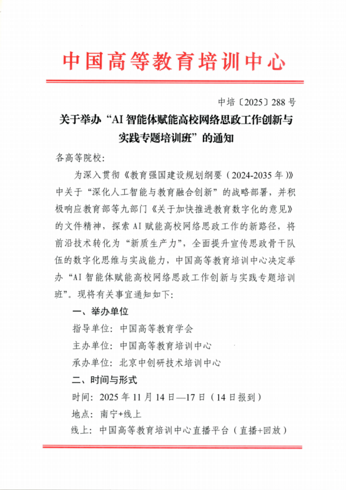
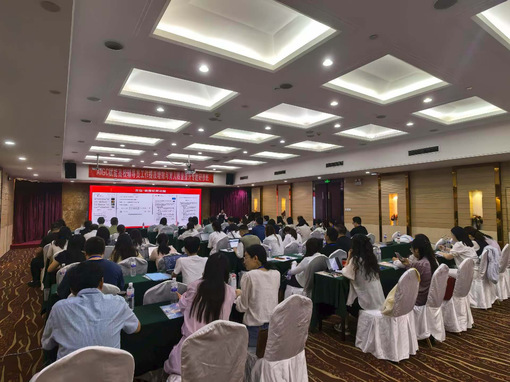
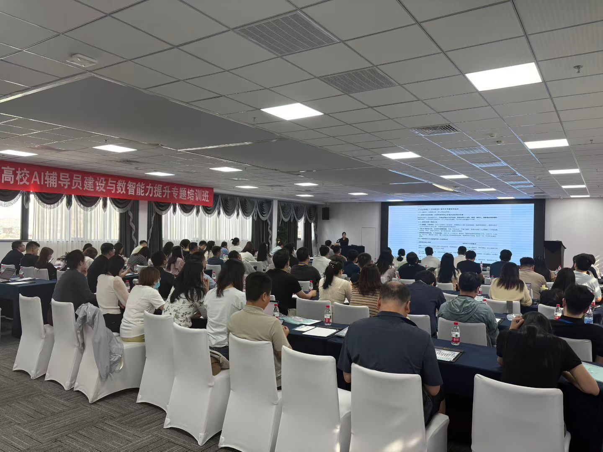

自24年达成合作协议以来，与中国高等教育学会合作开展《智慧党建・AI有方暨AI Agent 赋能高校党务智能体开发实训工作坊》、《Deepseek等AI智能体赋能高校行政能力提升暨Al Agent赋能公文写作实训工作坊》、《AI智能体赋能高校网络思政工作创新与实践专题培训班》等相关AI高校主题培训20多期，助力高校教师AI能力提升



与中国高等教育学会合作开展多次培训
合作案例 - 中国高等教育学会


